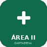

📚 Fuente: Comisión PROA — Subdirección General de Calidad Asistencial, SMS. Autores: Jimeno Almazán A., Alcaraz Vidal B., Blázquez Garrido R. et al.
🌍
Traductor de Consulta
Traducción y transcripción en directo para la consulta médica
🎙️ Usa el micrófono para traducir conversaciones en directo con pacientes. La transcripción se guarda automáticamente.
Escuchando...
💬 Conversación
🌍
Pulsa un botón de micrófono para empezar a traducir
🔒 Traducción por voz procesada en tu dispositivo · Traducción de texto vía DeepL/IA
Compatible con Chrome, Edge y Safari. Requiere micrófono para voz.
⚙️ Configurar DeepL (opcional — mejora la calidad)
Obtén tu key gratuita en deepl.com/pro (500.000 caracteres/mes gratis)
👤
📚 Propiedad intelectual y uso responsable: Los documentos disponibles en esta plataforma son para uso interno del Área II de Cartagena. Su distribución externa puede vulnerar los derechos de las sociedades científicas emisoras (SEMFYC, SEMES, SMS y otras). Acceso restringido a profesionales autorizados.
Especialidades
Cuaderno AI · Docencia Clínica
Cardiología
🩺
Haz tu primera pregunta clínica
🔒 Datos anonimizados. No incluyas nombre, DNI, NHC ni datos identificativos. Usa solo iniciales o número de cama. Los datos se guardan localmente en tu dispositivo y se borran al limpiar el navegador.
➕ Nuevo paciente de guardia
🛏️ Lista de pacientes en guardia
🛏️
No hay pacientes registrados en esta guardia
AI Studio · Generador Clínico
Genera contenido médico sobre Cardiología con IA.
📋 Recursos Sociales
Formularios y documentos oficiales para prestaciones sociales, pensiones y servicios de dependencia.
Sin configuración necesaria · Respuesta automática
✓ Listo
DeepSeek V3 activo. Sistema de fallback automático: DeepSeek → Pollinations → OpenRouter. En red local, las llamadas pasan por el proxy del NAS (REDACTED_INTERNAL_IP:3100).
1️⃣
DeepSeek V3 (directo)
5M tokens gratis · Sin límite de peticiones
PRINCIPAL
2️⃣
Pollinations AI
Fallback automático
FALLBACK
3️⃣
OpenRouter (Gemma / Llama)
Último recurso
FALLBACK
Estadísticas
Documentos
0
Preguntas
0
Notas
0
Modelo Activo
--
Config
🏥 Cuaderno AI Docencia clínica con IA para Cartagena Este.
• IA gratuita • Resúmenes automáticos • Estudio por especialidades
👤
📚 Propiedad intelectual y uso responsable: Los documentos disponibles en esta plataforma son para uso interno del Área II de Cartagena. Su distribución externa puede vulnerar los derechos de las sociedades científicas emisoras (SEMFYC, SEMES, SMS y otras). Acceso restringido a profesionales autorizados.
📋 Protocolos de Atencion Primaria
Accede a los protocolos y guías de atención primaria para profesionales médicos.
📚 Fuentes: Adaptación docente basada en guías SEMFYC, ESC 2024, GOLD 2024, GINA 2024, guías SEN, SEMERGEN, AEP y protocolos del Servicio Murciano de Salud. Contenido revisado para uso formativo — verificar siempre con fuentes oficiales actualizadas.
Sin configuración necesaria · Respuesta automática
✓ Listo
La IA de DeepSeek V3 está activa y no requiere API key. Usa un sistema de fallback automático: DeepSeek → Pollinations → OpenRouter. Si estás en la red local del hospital, las llamadas pasan por el proxy del NAS.
Modelo activo
1️⃣
DeepSeek V3 (directo)
5M tokens gratis · Sin límite de peticiones
PRINCIPAL
2️⃣
Pollinations AI
Fallback automático si DeepSeek falla
FALLBACK
3️⃣
OpenRouter (Gemma / Llama)
Último recurso si los anteriores fallan
FALLBACK
🧠
🤖 Pregunta sobre los Protocolos
La IA tiene acceso al contenido completo de los 10 protocolos de Atención Primaria.
🩺
Haz tu primera pregunta sobre los protocolos
✨
✨ Studio AP — Chat libre con IA
Pregunta lo que quieras. La IA conoce todos los protocolos de AP y responde con contexto clínico.
DeepSeek V3 · Contexto: protocolos de AP seleccionados
📄
Generador de Informes Clínicos
3 modos: Plantilla Urgencias, Generador con IA (Cmd+V capturas) y Mis Plantillas personalizadas.
Usa Qwen 2.5 VL para leer capturas · DeepSeek V3 para texto · Pega capturas con Cmd+V
🔒
🔒 Gestión de Protocolos — Admin
Añade o elimina protocolos personalizados. El contenido se guarda localmente y estará disponible para consultas con IA.
➕ Añadir Nuevo Protocolo
📋 Protocolos Personalizados
📭
No hay protocolos personalizados aún
💡 Tip: Accede al Panel Admin para subir protocolos de Atencion Primaria.
👤
📚 Propiedad intelectual y uso responsable: Los documentos disponibles en esta plataforma son para uso interno del Área II de Cartagena. Su distribución externa puede vulnerar los derechos de las sociedades científicas emisoras (SEMES, SMS, SEMES-CAM y otras). Acceso restringido a profesionales autorizados.
Protocolos Hospitalarios 38 protocolos extraídos de los manuales de urgencias del SMS, Toledo, SEUP y HUSL.
🔴 Reanimación / Críticos
SVA / RCP
Algoritmo universal de SVA
Vía Aérea Difícil / SRI
Secuencia Rápida de Intubación
Shock
Séptico, hipovolémico, cardiogénico
Anafilaxia
Adrenalina IM precoz
Sepsis / Código Sepsis
ATB en <1h, fluidos, vasopresores
❤️ Cardiología
SCA / Código Infarto
ECG <10 min, doble antiagregación
Crisis Hipertensiva
Urgencia vs emergencia HTA
🧠 Neurología
Ictus / Código Ictus
Fibrinolisis <4.5h
Hemorragia Cerebral / HSA
Control TA, reversión ACO
Status Epiléptico
BZD, FAE IV, sedación
Meningoencefalitis Aguda
ATB inmediato sin esperar TAC
💨 Neumología
Crisis Asmática
Broncodilatadores + corticoides
Disnea Aguda / Insuf. Respiratoria
VMNI, O2, tratar causa
🍽️ Digestivo
Insuficiencia Hepática Aguda
NAC si paracetamol
Enfermedad Inflamatoria Intestinal
Brote Crohn/CU en urgencias
🧬 Endocrinología
Hipoglucemia
Glucosa IV si inconsciente
Crisis Addisoniana
Hidrocortisona IV inmediata
💧 Urología
Escroto Agudo
Torsión testicular <6h
Hematuria
Sonda 3 vías si coágulos
🚑 Trauma
Politrauma
XABCDE, Ác. Tranexámico
TCE Adulto
Canadian CT Rule
Quemaduras
Regla de los 9, Parkland
🩸 Cirugía Vascular
Isquemia Arterial Aguda
Regla 6P, heparinización
Disección Aórtica
Tipo A = cirugía urgente
🌸 Alergia / ☠️ Toxicología / 🧠 Psiquiatría
Urticaria y Angioedema
Valorar vía aérea
Infección Piel / Fascitis
Crepitación = cirugía urgente
Intoxicación Etílica
Tiamina antes de glucosa
Intoxicación Fármacos/Drogas
Carbón, antídotos, psiquiatría
Agitación Psicomotriz
Desescalada, sedación
Conducta Suicida
Valoración riesgo autolítico
👶 Pediatría
Meningitis Pediátrica
ATB según edad
Convulsión Febril
BZD si >5 min
Bronquiolitis
VRS, soporte, no salbutamol
Laringitis / Crup
Dexametasona + adrenalina neb
Sepsis Pediátrica
Vía <5min, fluidos <15min
🤰 Obstetricia
Gripe y Gestación
Oseltamivir precoz
Migraña y Gestación
Descartar preeclampsia
Parto Prematuro / Inminente
Corticoides, profilaxis EGB
🤖 Pregunta sobre Protocolos de Urgencias
La IA tiene acceso al contenido de los 39 protocolos (trípticos + SEMFyC).
📚 Fuentes: Adaptación docente basada en guías SEMFyC, protocolos H.G.U. Santa Lucía (Cartagena), ESC 2024, ERC 2021, ATLS. Verificar siempre con fuentes oficiales.
🩺
Haz tu primera pregunta sobre urgencias
✨
✨ Studio Urgencias — Chat con DeepSeek
Chat libre sobre cualquier protocolo de urgencias. DeepSeek tiene acceso a los 77 protocolos.
DeepSeek V3 · 77 protocolos de urgencias
🔒 Datos anonimizados. No incluyas nombre, DNI, NHC ni datos identificativos. Usa solo iniciales o número de cama. Los datos se guardan localmente en tu dispositivo.
➕ Nuevo paciente de guardia
🛏️ Lista de pacientes en guardia
🛏️
No hay pacientes registrados en esta guardia
💊
Fármacos de Urgencia 51 fármacos · Ampolla, bolus, perfusión y notas. Fuente: SuperVHivencia · H.G.U. Santa Lucía
Directorio de buscas del Hospital Santa Lucía de Cartagena
🏥 Hospital General Universitario Santa Lucía · C/ Mezquita, s/n · 30202 Cartagena · Centralita: 968 12 86 00
🩺
¿Necesitas atención médica?
Te ayudamos a saber qué hacer. Elige cómo prefieres contarnos:
⏱ 2 minutos🔒 Sin registro📱 Totalmente gratuito
⚠️ Esto NO es un diagnóstico. Ante emergencia vital, llama al 112
🤖
Cuéntame qué te pasa
Habla o escribe. Te haré preguntas para orientarte.
🤖
¡Hola! Soy tu asistente de triaje. ¿Qué te ocurre?
Puedes hablar pulsando el botón rojo o escribir abajo.
⚖️ Aviso legal — Ley 41/2002
Esta herramienta es orientativa y NO es un diagnóstico médico. No sustituye la valoración de un profesional. En emergencias, llama al 112.
¿Para quién es?
🔒 Privacidad: No guardamos ningún dato. Todo se procesa en tu móvil.
!
Señales de emergencia
¿Tienes alguno de estos síntomas AHORA?
¿Qué zona te preocupa?
¿Cuál es el síntoma principal?
¿Cómo de intenso es? 5/10
¿Cuánto tiempo llevas así?
¿Tienes alguna de estas condiciones?
Marca las que tengas
Herramienta de orientación del Área II de Cartagena · Hospital Santa Lucía. No constituye diagnóstico médico. Basada en el Sistema Español de Triaje (SET). En emergencia llama al 112.
👤
🔬
🔬 Herramientas
Análisis de imágenes médicas con IA y casos clínicos NIH para formación.
⚠️ Uso exclusivamente docente. No sustituye el juicio clínico profesional. Las interpretaciones pueden contener errores y nunca deben usarse como diagnóstico definitivo.
🔒 RGPD Art. 9 — Protección de datos de salud: NO suba imágenes que contengan nombre, NHC, DNI, pegatinas identificativas ni datos del paciente. Las imágenes se envían a servicios IA externos para análisis y no se almacenan permanentemente. Este sistema NO es un producto sanitario conforme al Reglamento MDR 2017/745.
📱 Sube imágenes desde el móvil
Escanea el QR con tu móvil para hacer fotos y subirlas directamente aquí
🤖Modelo: Vision Transformers (ViT) · Dataset: ISIC Archive · Arquitectura sugerida: ViT · Análisis por Llama 4 Scout (Groq)
📷
Arrastra, haz clic, o pega (Ctrl+V) una imagen
JPG, PNG · Capturas de pantalla, fotos clínicas, radiografías o ECGs
⌨️ Ctrl+V / Cmd+V para pegar desde portapapeles
📋 Historial de análisis
🔬
Aún no hay análisis realizados
➕ Nueva escala personalizada
🫁 CURB-65 Neumonía
Puntaje: 0 / 5
⚠️ qSOFA Sepsis
Puntaje: 0 / 3
🩸 Wells TVP Trombosis venosa
Puntaje: 0
🧠 Glasgow Nivel de conciencia
GCS: 15 / 15 — Sin deterioro
🧩 NIHSS Ictus
Versión abreviada — suma total estimada
Nivel de conciencia (0-3)Mirada conjugada (0-2)Campo visual (0-3)Paresia facial (0-3)Motor brazo izq (0-4)Motor brazo der (0-4)Ataxia miembros (0-2)Sensibilidad (0-2)Lenguaje (0-3)Disartria (0-2)
NIHSS: 0 — Sin déficit
🏥 Escalas Clínicas Avanzadas
🫁 Escala Fine / PORT (PSI) Neumonía comunitaria
Comorbilidades
Exploración física
Laboratorio / Radiología
Introduce edad para calcular
🫀 PESI Severidad Embolismo Pulmonar
Introduce edad para calcular
💨 Índice BODE Pronóstico EPOC
BODE: 0/10
🫁 CRB-65 Neumonía comunitaria (sin analítica)
CRB-65: 0/4
💨 BAP-65 Exacerbación EPOC
BAP-65: Clase I
👶 Wood-Downes-Ferrés Bronquiolitis
Wood-Downes-Ferrés: 0/14
👶 Taussig Valoración del Crup
Taussig: 0/15
💨 DECAF Mortalidad EPOC agudizada
DECAF: 0/6
💨 CAUDA-70 Mortalidad intrahospitalaria EPOC
CAUDA-70: 0
💨 Riesgo Fracaso VNI EPOC agudizada
Riesgo fracaso VNI: 0
🫀 Estudio de Pisa Riesgo TEP con hallazgos Rx
Pisa: 0%
❤️ HEART Score Dolor torácico — ¿SCA?
HEART: 0/10
💓 CHA₂DS₂-VASc Riesgo ictus en FA
CHA₂DS₂-VASc: 0/9
🩸 HAS-BLED Riesgo hemorrágico en ACO
HAS-BLED: 0/9
🏥 NEWS2 Early Warning Score
NEWS2: 0
🏥 SOFA Fallo orgánico secuencial
SOFA: 0/24
🩸 Glasgow-Blatchford Hemorragia digestiva alta
Glasgow-Blatchford: 0/23
🫁 Child-Pugh Estadificación cirrosis
Child-Pugh: 5 — Clase A
🔬 Alvarado Sospecha de apendicitis
Alvarado: 0/10
🧠 PHQ-9 Depresión
En las últimas 2 semanas, ¿con qué frecuencia le han molestado?
PHQ-9: 0/27
🧠 GAD-7 Ansiedad
En las últimas 2 semanas, ¿con qué frecuencia?
GAD-7: 0/21
👴 Barthel Dependencia funcional
Barthel: 100/100 — Independiente
💧 CKD-EPI 2021 Filtrado glomerular estimado
Introduce creatinina y edad
🦴 Regla de Ottawa ¿Necesita Rx tobillo/pie?
Rx indicada si cumple CUALQUIERA:
Rx NO indicada No cumple criterios Ottawa — Sensibilidad ~98%
🧠 ABCD² Riesgo ictus tras AIT
ABCD²: 0/7
🔬 Ranson Gravedad pancreatitis aguda
Al ingreso
A las 48 horas
Ranson: 0/11
👴 Downton Riesgo de caídas
Downton: 0
🚬 Fagerström Dependencia nicotínica
Fagerström: 0/10
😴 Epworth Somnolencia diurna (SAOS)
Probabilidad de quedarse dormido (0=nunca, 1=escasa, 2=moderada, 3=elevada)
⚠️ NotebookLM no permite embeber. Usa el botón "↗ Abrir en pestaña" para acceder al cuaderno completo, o pulsa directamente sobre cualquiera de las tarjetas de arriba.
📋
📋 Plantilla de pacientes
Registro de seguimiento durante la guardia. Tus datos se sincronizan en la nube y solo tú puedes verlos.
🔐
Inicia sesión para acceder
Tus pacientes se guardan de forma privada en la nube. Nadie más puede verlos.
💾 Los datos se guardan automáticamente en este navegador (localStorage). No se envían a ningún servidor ni se almacenan en la nube.
🚨
Triaje Inteligente
Pega una captura del listado de pacientes y la IA genera la tabla de prioridades
📋
Pega (Ctrl+V) o arrastra la captura del listado
Selene, Florence, OCIOGEN, HCIS o cualquier listado de pacientes
⌨️ Ctrl+V / Cmd+V desde captura de pantalla
⚠️ Herramienta de apoyo — La priorización por IA es orientativa. El juicio clínico del profesional prevalece siempre. Datos anonimizados en el análisis.
⏰
Calculadora de Turnos de Guardia
Divide la guardia en turnos equitativos · Asigna nombres · Comparte por WhatsApp
2
👤
👩⚕️ Enfermería
Herramientas, protocolos y recursos para enfermería del Área II Cartagena
👩⚕️
Haz tu primera pregunta de enfermería
📋 Protocolos de Enfermería
Protocolos y procedimientos de enfermería para Atención Primaria
🩹
Curas y Heridas
Úlceras, heridas quirúrgicas, quemaduras
💉
Vía Venosa
Canalización, mantenimiento, complicaciones
🔧
Sondajes
Vesical, nasogástrico, rectal
💉
Vacunación
Calendario, técnica, conservación
💊
Inyectables
IM, SC, IV, intradérmica
📊
Constantes Vitales
PA, FC, Tª, SatO2, glucemia
💓
ECG
Realización e interpretación básica
🚨
RCP / SVB
Soporte Vital Básico y DEA
🩸
Paciente Diabético
Insulinas, glucemia, pie diabético
🏥
Triaje
Manchester, clasificación, derivación
💉 Técnicas de Enfermería
Procedimientos y técnicas paso a paso
💉
Vía Venosa Periférica
Canalización paso a paso
🔧
Sondaje Vesical
Masculino y femenino
🔧
Sonda Nasogástrica
Inserción y mantenimiento
🩹
Cura de Heridas
Tipos, técnica y apósitos
💊
Administración Inyectables
IM, SC, IV, ID
💓
Realización ECG
12 derivaciones paso a paso
🩸
Extracción Sanguínea
Orden tubos y venopunción
🚨
RCP y DEA
Soporte vital y desfibrilación
Resultado
💊 Guía de Fármacos
Consulta rápida de fármacos frecuentes en enfermería
Resultado
📊 Escalas y Valoraciones
Escalas de valoración más utilizadas en enfermería
📊
Norton (UPP)
Riesgo de úlceras por presión
📋
Barthel (ABVD)
Actividades básicas vida diaria
😣
EVA / Dolor
Escalas de valoración del dolor
🧠
Glasgow (Conciencia)
Nivel de conciencia
🩹
Braden (UPP)
Alternativa a Norton
⚠️
Downton (Caídas)
Riesgo de caídas
🚨
NEWS
Deterioro clínico precoz
🍎
MNA / MUST
Valoración nutricional
🩹
Guías Prácticas de Heridas — SERGAS
Colección «Úlceras Fóra» · Servicio Gallego de Salud · 8 guías basadas en evidencia
Vacunación VPH en grupos de riesgo – FAQ profesionales – murciasalud
FAQ · PDF
❓
Vacunación escolar VPH y meningococo (A,C,W,Y) – FAQ – murciasalud
FAQ · PDF
❓
Vacunación frente a VPH varones 1999-2010 – FAQ – murciasalud
FAQ · PDF
📝 Pautas y Tablas
📝
Pautas vacunación antitetánica en adulto tras herida
PDF
📝
Pautas rutinarias vacunación antitetánica en adulto con pauta incompleta
PDF
📝
Tabla indicaciones vacunación VPH y su pauta vacunal
PDF
📝
Vacunación antigripal en niños y registro
PDF
📝
Vacuna triple vírica y alergia al huevo
PDF
📝
Vacunación frente a Hepatitis B en adultos
PDF
📝
Vacunación frente a hepatitis B en pacientes en tratamiento renal sustitutivo
PDF
📝
Vacunación frente a hepatitis B en pacientes inmunodeprimidos
PDF
🖼️ Infografías
🖼️
Infografía 18 años o más
PDF
🖼️
Infografía de pautas de actualización vacunación frente al rotavirus
PDF
🖼️
Infografía embarazada
PDF
🖼️
Infografía guarderías
PDF
🖼️
Infografía menores de 18 años
PDF
🖼️
Infografía sanitarios
PDF
📎 Otros Documentos
📎
2025-5155
PDF
📚 Biblioteca completa: Todos estos documentos están disponibles en el NotebookLM del proyecto donde puedes consultar, buscar y hacer preguntas sobre su contenido con IA.
Total: 70+ documentos · Actualizado: Febrero 2026
La IA de Enfermería usa la misma configuración que Profesionales. Puedes cambiar el modelo desde aquí.
📖 FILEHUB
Cuaderno IA y Blog Publisher para cartagenaeste.es
📌 ¿Qué puedes hacer aquí?
📖 Cuaderno IA: Sube documentos (PDF, TXT, CSV, JSON...) y pregúntale a la IA sobre ellos. Resume, analiza, busca datos y responde preguntas usando Groq LLaMA 3.3 70B.
🌐 Blog Publisher: Escribe contenido, adjunta fotos/documentos, y la IA genera automáticamente un post completo en HTML que se publica en cartagenaeste.es con título, etiquetas y categoría.
📖 Cuaderno IA — FILEHUB
0 documentos · Groq LLaMA 3.3 70B
Fuentes
📎 Arrastra archivos
PDF, TXT, CSV, MD, JSON
Sin documentos aún
✨
Cuaderno IA
Sube documentos y pregúntame sobre ellos. Puedo resumir, analizar, buscar datos y responder.
Groq LLaMA 3.3 70B · Los archivos se procesan localmente
🌐 Blog Publisher — cartagenaeste.es
Escribe → IA formatea → Se publica automáticamente
📎 Arrastra fotos o archivos aquí
Imágenes, PDFs, documentos...
Política de Privacidad y Aviso Legal
Última actualización: marzo 2026 · Área II de Cartagena — Servicio Murciano de Salud
1. Responsable del tratamiento
Área II de Cartagena — Servicio Murciano de Salud (SMS). Centro de Salud Virgen de la Caridad, Cartagena (Murcia). Esta plataforma es una herramienta de uso interno sin ánimo de lucro, creada para apoyar la formación e información del personal sanitario y de los pacientes del Área II.
2. Datos que se tratan y finalidad
Dato
Finalidad
Base jurídica (RGPD)
Email y nombre (Google)
Control de acceso de profesionales
Art. 6.1.f — Interés legítimo
UID y timestamp
Registro de actividad y auditoría
Art. 6.1.f — Interés legítimo
Datos del autotriaje
Procesados 100% en el dispositivo del usuario. NO se envían ni almacenan en ningún servidor.
No aplica — datos locales
3. Período de conservación
Los registros de acceso (email, UID, páginas visitadas) se conservarán durante un máximo de 12 meses desde su recogida. Transcurrido ese período, serán eliminados de los sistemas de almacenamiento (Firebase Firestore).
4. Derechos del interesado
De acuerdo con el RGPD y la LOPDGDD, puede ejercer sus derechos de acceso, rectificación, supresión, portabilidad, limitación y oposición contactando con el administrador de la plataforma. También puede presentar una reclamación ante la Agencia Española de Protección de Datos (AEPD).
5. Aviso legal — Propiedad intelectual
Los documentos clínicos disponibles en esta plataforma proceden de fuentes internas del Área II o de sociedades científicas (SEMFYC, SEMES, SMS, u otras) y se publican con fines exclusivamente formativos e internos. Queda prohibida su redistribución externa sin autorización expresa de los titulares de los derechos. El código fuente de la plataforma es de uso interno del Área II.
6. Herramientas de IA — EU AI Act 2024/1689
Las herramientas de inteligencia artificial integradas en esta plataforma (Scan IA, Autotriaje) tienen carácter exclusivamente docente e informativo. No constituyen actos médicos ni sustitutos del juicio clínico profesional. De acuerdo con el Reglamento UE 2024/1689 sobre inteligencia artificial, estas herramientas se emplean en un entorno formativo supervisado, con disclaimer explícito en cada resultado. Ante cualquier emergencia vital, llame siempre al 112.
📞 Contacto del responsable: Para ejercer sus derechos o formular consultas sobre esta política, puede dirigirse al administrador de la plataforma a través de los canales internos del Área II de Cartagena — SMS.
✕
📤
Proponer contenido
Tu propuesta quedará pendiente de revisión por un moderador
📄
Arrastra el PDF aquí o haz clic
Subiendo...
🛡️
Panel de Moderación
Gestión de propuestas de contenido
👥 Gestión de Moderadores
Mostrando: propuestas pendientes
⏳
Cargando propuestas...
✕
🔬
Herramientas
Acceso con cuenta de Google · Pacientes y Autotriaje son libres
📋 Información sobre tratamiento de datos (RGPD)
Al iniciar sesión, su nombre y dirección de correo electrónico de Google se guardarán en nuestro sistema con el fin de control de acceso y registro de actividad de esta plataforma sanitaria. Base jurídica: interés legítimo del responsable (Art. 6.1.f RGPD). Los datos se conservarán durante 12 meses y no se cederán a terceros. Puede ejercer sus derechos de acceso, rectificación y supresión contactando con el administrador. Lea la Política de Privacidad completa antes de acceder.
❌ Error al iniciar sesión
Solo profesionales autorizados del Área II Cartagena.
✕
📖
Guía rápida de uso
Centro de Salud Virgen de la Caridad · Santa Lucía
¿Qué es esta aplicación?
Web app del Área II de Cartagena que reúne protocolos médicos, recursos para pacientes, herramientas de IA clínica y documentación profesional. Funciona desde cualquier móvil u ordenador, sin instalar nada.
¿Cómo accedo?
Opción 1: Escanea el QR de la pantalla principal con tu cámara.
Opción 2: Escribe en el navegador: carlosgalera-a11y.github.io/Cartagenaeste
Opción 3: En Chrome, pulsa ⋮ → "Añadir a pantalla de inicio" para crear un icono como app.
Secciones
👤 Pacientes — Acceso libre. Dietas, vacunas, ejercicios, dejar de fumar, recursos sociales y más.
🩺 Profesionales — Requiere login Google. Documentos por especialidad, preguntas IA, notas y apuntes.
📋 Protocolos AP — 10 protocolos de atención primaria con texto completo y asistente IA.
🚨 Protocolos Urgencias — 77 protocolos: trípticos, protocolos SEMFyC y hospitalarios con IA especializada.
🛠️ Herramientas — IA de imagen médica: dermatología, Rx tórax/ósea/abdomen, ECG, ecografía.
📞 Teléfonos Buscas — Directorio de buscas y teléfonos del hospital.
🌍 Traductor Consulta — Traducción en directo con micrófono para consultas con pacientes extranjeros. Árabe, francés, inglés, alemán, rumano, chino y más.
El asistente de IA
Escribe tu pregunta clínica en cualquier pestaña "Preguntas IA" o "IA Urgencias". El asistente responde basándose en los protocolos cargados. Es una herramienta de apoyo — contrasta siempre con tu criterio clínico.
Panel de Administrador
El botón "Admin Login" permite al administrador subir archivos, crear categorías y gestionar protocolos.
Área II Cartagena · Servicio Murciano de Salud · 2026
✕
🔐
Panel Admin
Area II Cartagena
⚠️Credenciales incorrectas
✅¡Acceso concedido! Redirigiendo...
Credenciales seguras • Sesión encriptada
👨💼 Panel Administrativo
📤 Subir Archivo
➕ Nueva Categoría
🔍
Escribe para buscar en toda la plataforma
QR Protocolo
⭐
Mis secciones favoritas
✕
Marca las secciones que quieres ver al inicio:

Instalar Área II Cartagena
Accede sin conexión desde tu pantalla de inicio
🔑 API Key Manager
Esta key se almacena en el código. Para cambiarla permanentemente, redespliega el archivo.
🍪 Política de cookies — Esta plataforma utiliza almacenamiento local (localStorage) para guardar preferencias, historial de preguntas y datos de sesión. No utilizamos cookies de terceros ni publicidad. Política de privacidad
Base jurídica: LSSI-CE Art. 22.2 · RGPD Art. 6.1.a (consentimiento)
![QR Área II Cartagena]()
![QR Google Sites]()